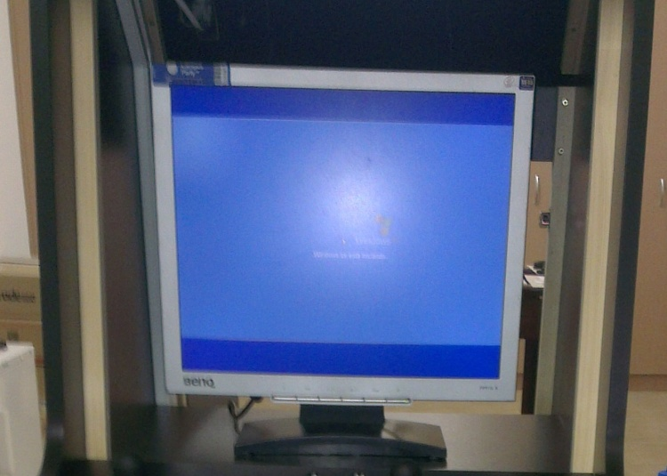
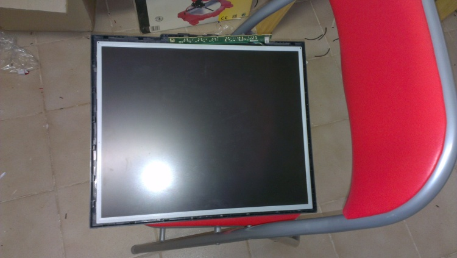
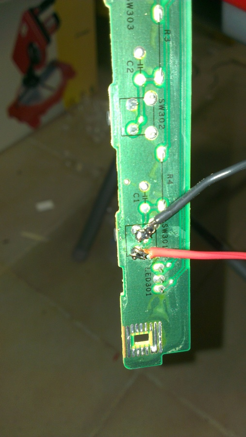
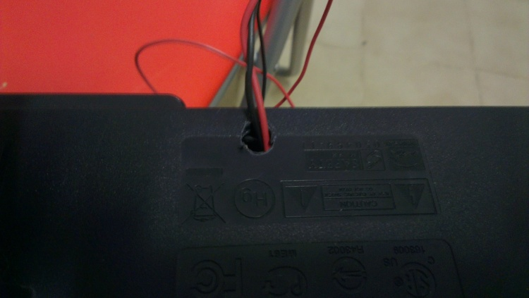
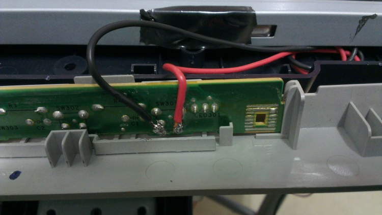
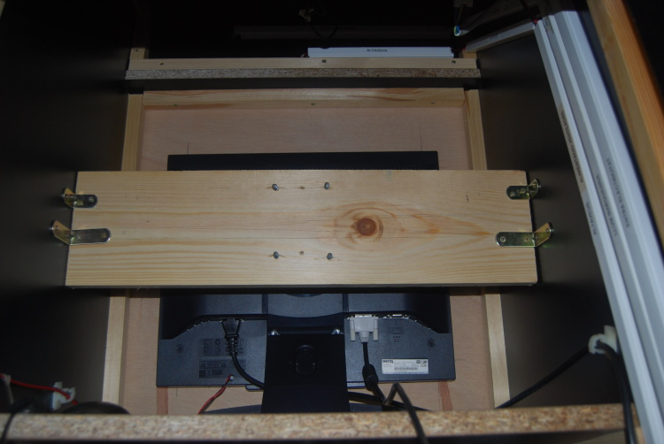
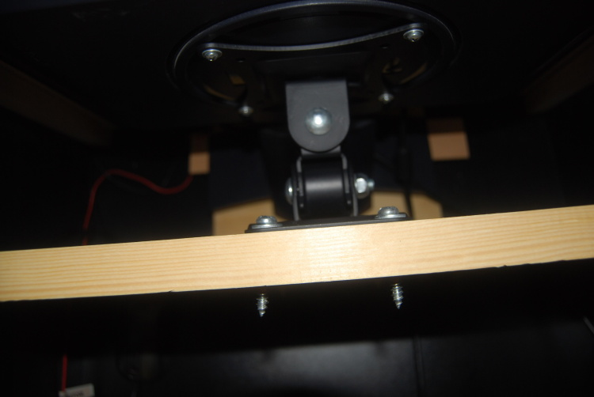

El Vídeo
Para el vídeo de la máquina he utilizado un monitor viejo de 19 pulgadas de 4:3.

Este monitor tiene el problema de que cuando se le alimenta no recuerda el estado anterior y siempre está apagado, para que se encienda se le ha de pulsar siempre el botón. Para solucionar el problema he tenido que desmontarlo y meterle 2 cables para poder enchufarlo desde el exterior de la máquina.
Los pasos que he seguido para meter los cables han sido:
Lo primero que he hecho ha sido quitarle el marco al monitor y buscar en el panel de botones el botón de encendido

Después de encontrar el botón de encendido le he soldado 2 cables para poder conectar a un botón del frontal de la máquina.

Después de soldar los cables he hecho un agujero en la parte posterior del monitor para sacar los cables

Una vez sacados los cables por el agujero he situado la botonera en su sitio y he cerrado el monitor.

Para que el monitor no se mueva he construido un soporte para este. El monitor y el soporte van unidos por un soporte de monitor vesa.
El soporte está formado por una pieza de madera que tiene la anchura de la máquina y de altura es un poco mayor que la del soporte del monitor vesa. Este ha sido fijado a la máquina con 24 escuadras, 2 a cada lado.

